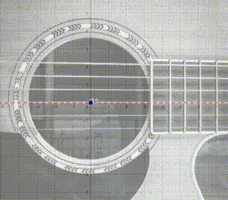

O estudo do sistema massa-mola é uma jornada fascinante que vai além do universo da física, abrangendo campos tão diversos quanto a engenharia, a medicina e, surpreendentemente, a música. A arte aparentemente simples de tocar e afinar um violão é, na verdade, um estudo prático desse sistema, e entendê-lo pode trazer uma nova dimensão à sua apreciação da música.
Cada corda de um violão pode ser vista como um sistema massa-mola. Quando tensionamos ou relaxamos uma corda, estamos modificando a constante elástica desse sistema, o que, por sua vez, altera a frequência da vibração que a corda produz. Essa frequência determina a nota que ouvimos.
Mas a magia verdadeira acontece quando tocamos duas cordas simultaneamente. Se suas frequências forem muito próximas, mas não idênticas, ouviremos um fenômeno chamado batimento. Esse é um tipo de interferência que ocorre quando duas ondas de frequências diferentes se somam, resultando em um padrão de "pulsar" ou "bater" no som. Este fenômeno é essencial para a afinação precisa do violão, pois ao ouvir o batimento entre duas cordas, um músico pode ajustar a tensão até que o batimento desapareça, indicando que as cordas estão em harmonia.
A equação diferencial que modela o sistema massa-mola é uma representação matemática do comportamento da corda e do som que ela produz. Ao resolver essa equação, obtemos uma função que emula o som de uma nota musical, permitindo-nos prever e entender como cada pequena alteração na tensão da corda afetará o som final.
Então, ao mergulhar no estudo do sistema massa-mola, você está se conectando com o mundo ao seu redor de maneiras surpreendentes. Você está explorando a música através da lente da física, compreendendo a ciência por trás da arte. E quem sabe onde esse conhecimento poderá levá-lo? Talvez você utilize esses princípios para criar uma sinfonia, ou talvez para simplesmente apreciar a música de uma maneira mais profunda. No fim das contas, a física e a música estão interligadas, e essa conexão é um dos muitos motivos que tornam o estudo do sistema massa-mola tão gratificante.
O som emitido por uma corda de violão possui diversas propriedades complexas, mas seu movimento, e consequente a onda sonora produzida por ele, podem ser aproximadas para uma soma de funções tirgonométricas cíclcicas (e portanto, com frequências e amplitudes bem definidas). Vamos manter o foco na função trigonométrica de maior amplitude, pois ela é quem define a nota do som, e representa bem nosso problema.
O som emitido por uma nota única reproduzido por um falante não é tão agradável aos ouvidos, como você pode verificar no player abaixo, mas é interessante como aproximação para elaboração de um modelo matemático simples.
Para tratar desde caso, precisamos de um sistema massa-mola equivalente. A figura mostra um ponto de uma das cordas em movimento harmônico da mesma forma que um sistema massa-mola.
Vamos chamar de posição zero a posição onde a corda é um segmento de reta horizontal.
É possível ver que o deslocamento no ponto destacado da corda gera uma força no sentido oposto, que acelera para a posição zero, porém, nesta posição (onde a força é zero), a velocidade é máxima de modo que a inércia impede a corda de se manter desta forma.
A massa equivalente e a constante elástica equivalente não é a massa da corda nem a constante elástica da corda, e sim uma combinação que produza uma frequencia igual a do sistema.
Para todo caso, não estamos interessados na massa, nem na constante, mas sim na frequência. Sabemos que a solução deste problema é a função
COLOCAR AQUI A SOLUÇÃO
No entando, o controle da frequência da corda ocorre no seu tensionamento.
A afinação de um violão inicia na corda mais aguda (1ª corda E, ou Mi). Esta corda é ajustada usando uma referência sonora confiável, como um diapasão, um piano afinado ou um dispositivo eletrônico.
Para as demais cordas, utilizamos o fenômeno de batimento. Quando pressionamos a quinta casa da primeira corda, deveríamos ouvir a mesma nota que a segunda corda solta (B, ou Si). Se não forem iguais, um som oscilante, ou batimento, será percebido.
O batimento ocorre quando duas notas de frequências muito próximas são tocadas simultaneamente, gerando uma nova onda cuja frequência é a diferença entre as duas originais. Este efeito de "pulsação" diminui conforme as frequências se igualam. Assim, ajustamos a tensão de cada corda até o batimento desaparecer, indicando que as notas são iguais.
O audio a seguir mostra a soma se duas notas soando. A primeira é a nota La e a segunda é uma nota próxima a La, que varia sua frequência a londo do tempo e se aproxima da nota La. É possível escutar o fenômeno do batimento.

Nas Equações Diferenciais Ordinárias (EDOs), o batimento ilustra como soluções sinoidais podem interagir para produzir comportamentos complexos, como o som oscilante durante a afinação de um violão. Portanto, a afinação é um exemplo prático de aplicação das EDOs.
CONTINUAR DEPOIS
Ondas sonoras se somam, e quando o pico de uma se sobrepoe ao vale de outra, elas se cancelam.